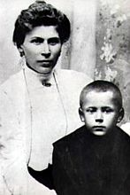

Dzieciñstwo
Urodzi³ siê 3 sierpnia 1901 w Zuzeli nad Bugiem jako drugie dziecko Stanis³awa (organisty miejscowego ko¶cio³a) i Julianny (z d. Karp) Wyszyñskich. W 1910 rodzina przenios³a siê do Andrzejewa, gdzie zmar³a matka.
W latach 1912-1915 by³ uczniem Gimnazjum Górskiego w Warszawie. Z powodu wojny w latach 1914-1917 uczêszcza³ do gimnazjum mêskiego im. Piotra Skargi w £om¿y.
W latach 1917-1920 uczy³ siê w liceum w³oc³awskim im. Piusa X (Ni¿sze Seminarium Duchowne). W latach 1920-1924 by³ klerykiem Wy¿szego Seminarium Duchownego we W³oc³awku.
Stefan Wyszyñski z matk±